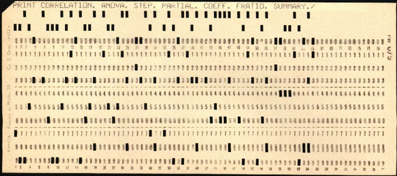
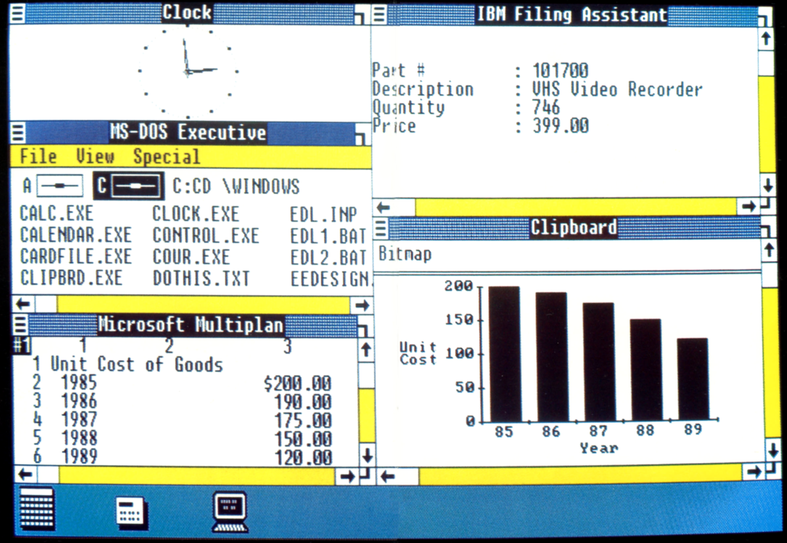
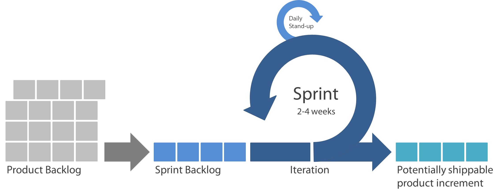
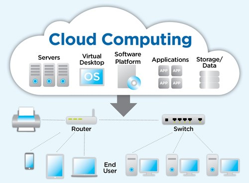

Software development history
Artur Kasperek
Presentation Plan:
- Born of software development
- First software companies
- Waterfall approach
- Scrum approach
- Summary & Future
Old times ( 1939 - 70s )

First software companies ( 1975+ )

Waterfall approach
 Scrum approach
Scrum approach

Summary &
Couple worlds about future

Thanks !
QA ?